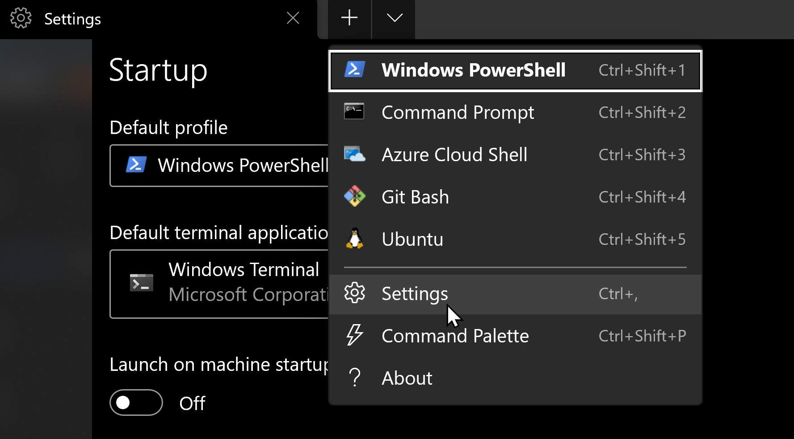
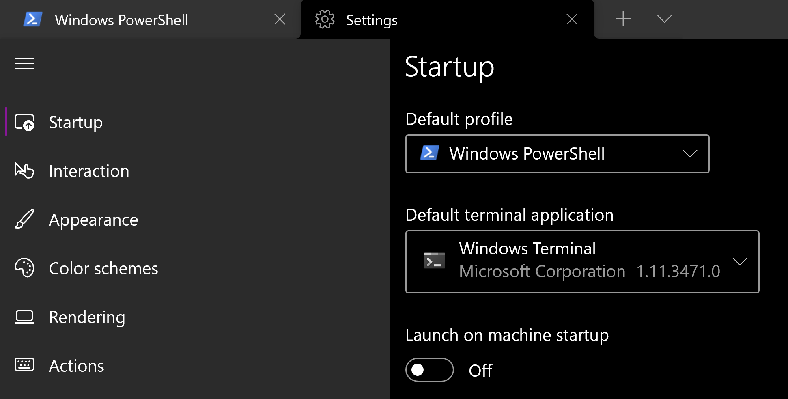

Settings in microsoft windows terminal
Where are the microsoft windows terminal settings?

You can select them from the drop down arrow in the row of tabs at the top of the terminal.
Settings you should set in microsoft windows terminal
These are good settings to set in Windows Terminal.
- First, choose which profile use when Windows Terminal is started, or any other time the
Default profileis requested. I usePowerShellyou can use anything you want. - Next you want to make sure that Windows considers Windows Terminal to be the
Default terminal application, instead of retro museum and not ghastly and old like theWindows Console Host(conhost.exe).
